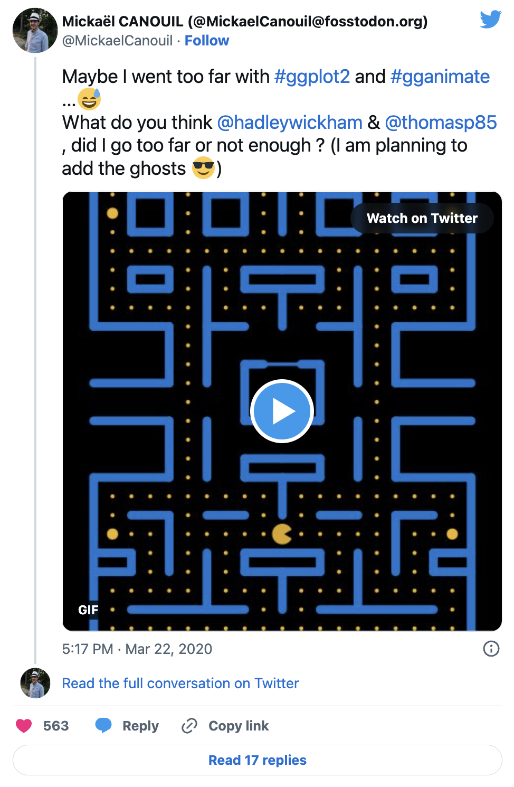
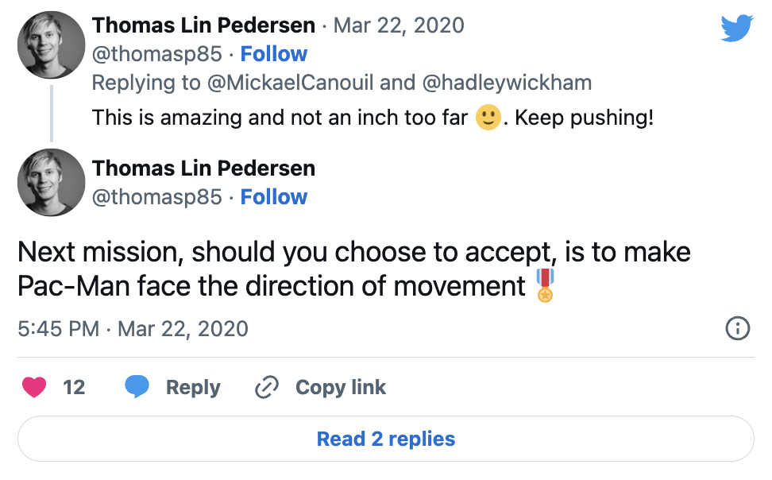

![]()
1 The Story of ggpacman

It started on a Saturday evening …
It was the 21st of March (for the sake of precision), around 10 pm CET (also for the sake of precision and mostly because it is not relevant). I was playing around with my data on ‘all’ the movies I have seen so far (mcanouil/imdb-ratings) and looking on possibly new ideas of visualisation on twitter using #ggplot2 and #gganimate (by the way the first time I played with gganimate was at useR-2018 (Brisbane, Australia), just before and when @thomasp85 released the actual framework). The only thing on the feed was “contaminated/deaths and covid-19” curves made with ggplot2 and a few with gganimate … Let’s say, it was not as funny and interesting as I was hoping for … Then, I’ve got an idea, what if I can do something funny and not expected with ggplot2 and gganimate? My first thought, was let’s draw and animate Pac-Man, that should not be that hard!
Well, it was not that easy after-all … But, I am going to go through my code here (you might be interested to actually look at the commits history.

2 The R packages
3 The maze layer
3.1 The base layer
First thing first, I needed to set-up the base layer, meaning, the maze from Pac-Man. I did start by setting the coordinates of the maze.
For later use, I defined some scales (actually those scales, where defined way after chronologically speaking). I am using those to define sizes and colours for all the geometries I am going to use to achieve the Pac-Man GIF.
map_colours <- c(
"READY!" = "goldenrod1",
"wall" = "dodgerblue3", "door" = "dodgerblue3",
"normal" = "goldenrod1", "big" = "goldenrod1", "eaten" = "black",
"Pac-Man" = "yellow",
"eye" = "white", "iris" = "black",
"Blinky" = "red", "Blinky_weak" = "blue", "Blinky_eaten" = "transparent",
"Pinky" = "pink", "Pinky_weak" = "blue", "Pinky_eaten" = "transparent",
"Inky" = "cyan", "Inky_weak" = "blue", "Inky_eaten" = "transparent",
"Clyde" = "orange", "Clyde_weak" = "blue", "Clyde_eaten" = "transparent"
)
My base_layer here is not really helpful, so I temporarily added some elements to help me draw everything on it. Note: I won’t use it in the following.
base_layer +
scale_x_continuous(breaks = 0:21, sec.axis = dup_axis()) +
scale_y_continuous(breaks = 0:26, sec.axis = dup_axis()) +
theme(
panel.grid.major = element_line(colour = "white"),
axis.text = element_text(colour = "white")
) +
annotate("rect", xmin = 0, xmax = 21, ymin = 0, ymax = 26, fill = NA){kind=link}
Quite better, isn’t it?!
3.2 The grid layer
Here, I am calling “grid”, the walls of the maze. For this grid, I started drawing the vertical lines on the left side of the maze (as you may have noticed, the first level is symmetrical).
left_vertical_segments <- tribble(
~x, ~y, ~xend, ~yend,
0, 0, 0, 9,
0, 17, 0, 26,
2, 4, 2, 5,
2, 19, 2, 20,
2, 22, 2, 24,
4, 4, 4, 7,
4, 9, 4, 12,
4, 14, 4, 17,
4, 19, 4, 20,
4, 22, 4, 24,
6, 2, 6, 5,
6, 9, 6, 12,
6, 14, 6, 20,
6, 22, 6, 24,
8, 4, 8, 5,
8, 9, 8, 10,
8, 12, 8, 15,
8, 19, 8, 20,
8, 22, 8, 24
)base_layer +
geom_segment(
data = left_vertical_segments,
mapping = aes(x = x, y = y, xend = xend, yend = yend),
lineend = "round",
inherit.aes = FALSE,
colour = "white"
)
Then, I added the horizontal lines (still only on the left side of the maze)!
left_horizontal_segments <- tribble(
~x, ~y, ~xend, ~yend,
0, 0, 10, 0,
2, 2, 8, 2,
0, 4, 2, 4,
8, 4, 10, 4,
0, 5, 2, 5,
8, 5, 10, 5,
2, 7, 4, 7,
6, 7, 8, 7,
0, 9, 4, 9,
8, 9, 10, 9,
8, 10, 10, 10,
0, 12, 4, 12,
8, 12, 10, 12,
0, 14, 4, 14,
8, 15, 9, 15,
0, 17, 4, 17,
6, 17, 8, 17,
2, 19, 4, 19,
8, 19, 10, 19,
2, 20, 4, 20,
8, 20, 10, 20,
2, 22, 4, 22,
6, 22, 8, 22,
2, 24, 4, 24,
6, 24, 8, 24,
0, 26, 10, 26
)
left_segments <- bind_rows(left_vertical_segments, left_horizontal_segments)base_layer +
geom_segment(
data = left_segments,
mapping = aes(x = x, y = y, xend = xend, yend = yend),
lineend = "round",
inherit.aes = FALSE,
colour = "white"
){kind=link}
The maze is slowly appearing, but surely. As I wrote earlier, the first level is symmetrical, so I used my left lines left_segments to compute all the lines on the right right_segments.
base_layer +
geom_segment(
data = bind_rows(left_segments, right_segments),
mapping = aes(x = x, y = y, xend = xend, yend = yend),
lineend = "round",
inherit.aes = FALSE,
colour = "white"
){kind=link}
The middle vertical lines were missing, i.e., I did not want to plot them twice, which would have happen, if I added these in left_segments. Also, the “door” of the ghost spawn area is missing. I added the door and the missing vertical walls in the end.
centre_vertical_segments <- tribble(
~x, ~y, ~xend, ~yend,
10, 2, 10, 4,
10, 7, 10, 9,
10, 17, 10, 19,
10, 22, 10, 26
)
door_segment <- tibble(x = 9, y = 15, xend = 11, yend = 15, type = "door")Finally, I combined all the segments and drew them all.
base_layer +
geom_segment(
data = maze_walls,
mapping = aes(x = x, y = y, xend = xend, yend = yend),
lineend = "round",
inherit.aes = FALSE,
colour = "white"
)
The maze is now complete, but no-one can actually see the door, since it appears the same way as the walls. You may have noticed, I added a column named type. type can currently hold two values: "wall" and "door". I am going to use type as values for two aesthetics, you may already have guessed which ones. The answer is the colour and size aesthetics.
base_layer +
geom_segment(
data = maze_walls,
mapping = aes(x = x, y = y, xend = xend, yend = yend, colour = type, size = type),
lineend = "round",
inherit.aes = FALSE
){kind=link}
Note: maze_walls is a dataset of ggpacman (data("maze_walls", package = "ggpacman")).
3.3 The bonus points layer
The strategy was quite the same as for the grid layer:
- Setting up the point coordinates for the left side and the middle.
- Compute the coordinates for the right side.
- Use a column
typefor the two types of bonus points, i.e.,"normal"and"big"(the one who weaken the ghosts).
bonus_points_coord <- function() {
left_bonus_points <- tribble(
~x, ~y, ~type,
1, c(1:3, 7:8, 18:22, 24:25), "normal",
1, c(6, 23), "big",
2, c(1, 3, 6, 8, 18, 21, 25), "normal",
3, c(1, 3:6, 8, 18, 21, 25), "normal",
4, c(1, 3, 8, 18, 21, 25), "normal",
5, c(1, 3:25), "normal",
6, c(1, 6, 8, 21, 25), "normal",
7, c(1, 3:6, 8, 18:21, 25), "normal",
8, c(1, 3, 6, 8, 18, 21, 25), "normal",
9, c(1:3, 6:8, 18, 21:25), "normal"
)
bind_rows(
left_bonus_points,
tribble(
~x, ~y, ~type,
10, c(1, 21), "normal"
),
mutate(left_bonus_points, x = abs(x - 20))
) %>%
unnest("y")
}
maze_points <- bonus_points_coord()maze_layer <- base_layer +
geom_segment(
data = maze_walls,
mapping = aes(x = x, y = y, xend = xend, yend = yend, colour = type, size = type),
lineend = "round",
inherit.aes = FALSE
) +
geom_point(
data = maze_points,
mapping = aes(x = x, y = y, size = type, colour = type),
inherit.aes = FALSE
)
Note: maze_points is a dataset of ggpacman (data("maze_points", package = "ggpacman")).
4 Pac-Man character
It is now time to draw the main character. To draw Pac-Man, I needed few things:
-
The Pac-Man moves, i.e., all the coordinates where Pac-Man is supposed to be at every
step.data("pacman", package = "ggpacman") unnest(pacman, c("x", "y")) #> # A tibble: 150 × 3 #> x y colour #> <dbl> <dbl> <chr> #> 1 10 6 Pac-Man #> 2 10 6 Pac-Man #> 3 10 6 Pac-Man #> 4 10 6 Pac-Man #> 5 10 6 Pac-Man #> 6 10 6 Pac-Man #> 7 10 6 Pac-Man #> 8 10 6 Pac-Man #> 9 10 6 Pac-Man #> 10 10 6 Pac-Man #> # ℹ 140 more rows -
The Pac-Man shape (open and closed mouth). Since, Pac-Man is not a complete circle shape, I used
geom_arc_bar()(fromggforce), and defined the properties of each state of Pac-Man based on the aesthetics required by this function. Note: At first, I wanted a smooth animation/transition ofPac-Man opening and closing its mouth, this is why there arefour"close_"states.pacman_state <- tribble( ~state, ~start, ~end, "open_right", 14 / 6 * pi, 4 / 6 * pi, "close_right", 15 / 6 * pi, 3 / 6 * pi, "open_up", 11 / 6 * pi, 1 / 6 * pi, "close_up", 12 / 3 * pi, 0 / 6 * pi, "open_left", 8 / 6 * pi, - 2 / 6 * pi, "close_left", 9 / 6 * pi, - 3 / 6 * pi, "open_down", 5 / 6 * pi, - 5 / 6 * pi, "close_down", pi, - pi )ggplot() + geom_arc_bar( data = pacman_state, mapping = aes(x0 = 0, y0 = 0, r0 = 0, r = 0.5, start =start, end = end), fill = "yellow", inherit.aes = FALSE ) + facet_wrap(vars(state), ncol = 4)
{kind=link}

Once those things available, how to make Pac-Man look where he is headed? Short answer, I just computed the differences between two successive positions of Pac-Man and added both open/close state to a new column state.
pacman %>%
unnest(c("x", "y")) %>%
mutate(
state_x = sign(x - lag(x)),
state_y = sign(y - lag(y)),
state = case_when(
(is.na(state_x) | state_x %in% 0) & (is.na(state_y) | state_y %in% 0) ~ list(c("open_right", "close_right")),
state_x == 1 & state_y == 0 ~ list(c("open_right", "close_right")),
state_x == -1 & state_y == 0 ~ list(c("open_left", "close_left")),
state_x == 0 & state_y == -1 ~ list(c("open_down", "close_down")),
state_x == 0 & state_y == 1 ~ list(c("open_up", "close_up"))
)
) %>%
unnest("state")
#> # A tibble: 300 × 6
#> x y colour state_x state_y state
#> <dbl> <dbl> <chr> <dbl> <dbl> <chr>
#> 1 10 6 Pac-Man NA NA open_right
#> 2 10 6 Pac-Man NA NA close_right
#> 3 10 6 Pac-Man 0 0 open_right
#> 4 10 6 Pac-Man 0 0 close_right
#> 5 10 6 Pac-Man 0 0 open_right
#> 6 10 6 Pac-Man 0 0 close_right
#> 7 10 6 Pac-Man 0 0 open_right
#> 8 10 6 Pac-Man 0 0 close_right
#> 9 10 6 Pac-Man 0 0 open_right
#> 10 10 6 Pac-Man 0 0 close_right
#> # ℹ 290 more rowsHere, in preparation for gganimate, I also added a column step before merging the new upgraded pacman (i.e., with the Pac-Man state column) with the pacman_state defined earlier.
pacman_moves <- ggpacman::compute_pacman_coord(pacman)#> # A tibble: 300 × 9
#> x y colour state_x state_y state step start end
#> <dbl> <dbl> <chr> <dbl> <dbl> <chr> <int> <dbl> <dbl>
#> 1 10 6 Pac-Man NA NA open_right 1 7.33 2.09
#> 2 10 6 Pac-Man NA NA close_right 2 7.85 1.57
#> 3 10 6 Pac-Man 0 0 open_right 3 7.33 2.09
#> 4 10 6 Pac-Man 0 0 close_right 4 7.85 1.57
#> 5 10 6 Pac-Man 0 0 open_right 5 7.33 2.09
#> 6 10 6 Pac-Man 0 0 close_right 6 7.85 1.57
#> 7 10 6 Pac-Man 0 0 open_right 7 7.33 2.09
#> 8 10 6 Pac-Man 0 0 close_right 8 7.85 1.57
#> 9 10 6 Pac-Man 0 0 open_right 9 7.33 2.09
#> 10 10 6 Pac-Man 0 0 close_right 10 7.85 1.57
#> # ℹ 290 more rowsmaze_layer +
geom_arc_bar(
data = pacman_moves,
mapping = aes(x0 = x, y0 = y, r0 = 0, r = 0.5, start = start, end = end, colour = colour, fill = colour, group = step),
inherit.aes = FALSE
){kind=link}
You can’t see much?! Ok, perhaps it’s time to use gganimate. I am going to animate Pac-Man based on the column step, which is, if you looked at the code above, just the line number of pacman_moves.
animated_pacman <- maze_layer +
geom_arc_bar(
data = pacman_moves,
mapping = aes(x0 = x, y0 = y, r0 = 0, r = 0.5, start = start, end = end, colour = colour, fill = colour, group = step),
inherit.aes = FALSE
) +
transition_manual(step)
Note: pacman is a dataset of ggpacman (data("pacman", package = "ggpacman")).
5 The Ghosts characters
Time to draw the ghosts, namely: Blinky, Pinky, Inky and Clyde.
5.1 Body
I started with the body, especially the top and the bottom part of the ghost which are half circle (or at least I chose this) and use again geom_arc_bar().
ghost_arc <- tribble(
~x0, ~y0, ~r, ~start, ~end, ~part,
0, 0, 0.5, - 1 * pi / 2, 1 * pi / 2, "top",
-0.5, -0.5 + 1/6, 1 / 6, pi / 2, 2 * pi / 2, "bottom",
-1/6, -0.5 + 1/6, 1 / 6, pi / 2, 3 * pi / 2, "bottom",
1/6, -0.5 + 1/6, 1 / 6, pi / 2, 3 * pi / 2, "bottom",
0.5, -0.5 + 1/6, 1 / 6, 3 * pi / 2, 2 * pi / 2, "bottom"
){kind=link}
I retrieved the coordinates of the created polygon, using ggplot_build().
top_polygon <- ggplot_build(top)$data[[1]][, c("x", "y")]And I proceeded the same way for the bottom part of the ghost.
{kind=link}
bottom_polygon <- ggplot_build(bottom)$data[[1]][, c("x", "y")]Then, I just added one point to “properly” link the top and the bottom part.
ghost_body <- dplyr::bind_rows(
top_polygon,
dplyr::tribble(
~x, ~y,
0.5, 0,
0.5, -0.5 + 1/6
),
bottom_polygon,
dplyr::tribble(
~x, ~y,
-0.5, -0.5 + 1/6,
-0.5, 0
)
)I finally got the whole ghost shape I was looking for.
{kind=link}
Note: ghost_body is a dataset of ggpacman (data("ghost_body", package = "ggpacman")).
Note: ghost_body definitely needs some code refactoring.
5.2 Eyes
The eyes are quite easy to draw, they are just circles, but … As for Pac-Man before, I wanted the ghosts to look where they are headed. This implies moving the iris one way or the other, and so I defined five states for the iris: right, down, left, up and middle.
ghost_eyes <- tribble(
~x0, ~y0, ~r, ~part, ~direction,
1/5, 1/8, 1/8, "eye", c("up", "down", "right", "left", "middle"),
-1/5, 1/8, 1/8, "eye", c("up", "down", "right", "left", "middle"),
5/20, 1/8, 1/20, "iris", "right",
-3/20, 1/8, 1/20, "iris", "right",
1/5, 1/16, 1/20, "iris", "down",
-1/5, 1/16, 1/20, "iris", "down",
3/20, 1/8, 1/20, "iris", "left",
-5/20, 1/8, 1/20, "iris", "left",
1/5, 3/16, 1/20, "iris", "up",
-1/5, 3/16, 1/20, "iris", "up",
1/5, 1/8, 1/20, "iris", "middle",
-1/5, 1/8, 1/20, "iris", "middle"
) %>%
unnest("direction")map_eyes <- c("eye" = "white", "iris" = "black")
ggplot() +
coord_fixed(xlim = c(-0.5, 0.5), ylim = c(-0.5, 0.5)) +
scale_fill_manual(breaks = names(map_eyes), values = map_eyes) +
scale_colour_manual(breaks = names(map_eyes), values = map_eyes) +
geom_circle(
data = ghost_eyes,
mapping = aes(x0 = x0, y0 = y0, r = r, colour = part, fill = part),
inherit.aes = FALSE,
show.legend = FALSE
) +
facet_wrap(vars(direction), ncol = 3){kind=link}
Note: ghost_eyes is a dataset of ggpacman (data("ghost_eyes", package = "ggpacman")).
5.3 Ghost shape
I had the whole ghost shape and the eyes.
ggplot() +
coord_fixed(xlim = c(-1, 1), ylim = c(-1, 1)) +
scale_fill_manual(breaks = names(map_colours), values = map_colours) +
scale_colour_manual(breaks = names(map_colours), values = map_colours) +
geom_polygon(
data = get(data("ghost_body", package = "ggpacman")),
mapping = aes(x = x, y = y),
inherit.aes = FALSE
) +
geom_circle(
data = get(data("ghost_eyes", package = "ggpacman")),
mapping = aes(x0 = x0, y0 = y0, r = r, colour = part, fill = part),
inherit.aes = FALSE,
show.legend = FALSE
) +
facet_wrap(vars(direction), ncol = 3){kind=link}
Again, same as for Pac-Man, in order to know where the ghosts are supposed to look, I computed the differences of each successive positions of the ghosts and I added the corresponding directions.
blinky_ghost <- tibble(x = c(0, 1, 1, 0, 0), y = c(0, 0, 1, 1, 0), colour = "Blinky") %>%
unnest(c("x", "y")) %>%
mutate(
X0 = x,
Y0 = y,
state_x = sign(round(x) - lag(round(x))),
state_y = sign(round(y) - lag(round(y))),
direction = case_when(
(is.na(state_x) | state_x %in% 0) & (is.na(state_y) | state_y %in% 0) ~ "middle",
state_x == 1 & state_y == 0 ~ "right",
state_x == -1 & state_y == 0 ~ "left",
state_x == 0 & state_y == -1 ~ "down",
state_x == 0 & state_y == 1 ~ "up"
)
) %>%
unnest("direction")#> # A tibble: 5 × 8
#> x y colour X0 Y0 state_x state_y direction
#> <dbl> <dbl> <chr> <dbl> <dbl> <dbl> <dbl> <chr>
#> 1 0 0 Blinky 0 0 NA NA middle
#> 2 1 0 Blinky 1 0 1 0 right
#> 3 1 1 Blinky 1 1 0 1 up
#> 4 0 1 Blinky 0 1 -1 0 left
#> 5 0 0 Blinky 0 0 0 -1 downI also added some noise around the position, i.e., four noised position at each actual position of a ghost.
#> # A tibble: 20 × 12
#> x y colour X0 Y0 state_x state_y direction state step noise_x
#> <dbl> <dbl> <chr> <dbl> <dbl> <dbl> <dbl> <chr> <int> <int> <dbl>
#> 1 0 0 Blinky 0 0 NA NA middle 1 1 -0.00237
#> 2 0 0 Blinky 0 0 NA NA middle 2 2 -0.107
#> 3 0 0 Blinky 0 0 NA NA middle 3 3 -0.0608
#> 4 0 0 Blinky 0 0 NA NA middle 4 4 -0.0696
#> 5 1 0 Blinky 1 0 1 0 right 1 5 0.0394
#> 6 1 0 Blinky 1 0 1 0 right 2 6 -0.00189
#> 7 1 0 Blinky 1 0 1 0 right 3 7 -0.0214
#> 8 1 0 Blinky 1 0 1 0 right 4 8 -0.00565
#> 9 1 1 Blinky 1 1 0 1 up 1 9 0.0294
#> 10 1 1 Blinky 1 1 0 1 up 2 10 -0.0300
#> 11 1 1 Blinky 1 1 0 1 up 3 11 0.0501
#> 12 1 1 Blinky 1 1 0 1 up 4 12 -0.0399
#> 13 0 1 Blinky 0 1 -1 0 left 1 13 0.0380
#> 14 0 1 Blinky 0 1 -1 0 left 2 14 0.0687
#> 15 0 1 Blinky 0 1 -1 0 left 3 15 -0.00772
#> 16 0 1 Blinky 0 1 -1 0 left 4 16 -0.0686
#> 17 0 0 Blinky 0 0 0 -1 down 1 17 0.0395
#> 18 0 0 Blinky 0 0 0 -1 down 2 18 -0.0493
#> 19 0 0 Blinky 0 0 0 -1 down 3 19 -0.0348
#> 20 0 0 Blinky 0 0 0 -1 down 4 20 -0.0444
#> # ℹ 1 more variable: noise_y <dbl>Then, I added (in a weird way I might say) the polygons coordinates for the body and the eyes.
blinky_ghost <- blinky_ghost %>%
mutate(
body = pmap(
.l = list(x, y, noise_x, noise_y),
.f = function(.x, .y, .noise_x, .noise_y) {
mutate(
.data = get(data("ghost_body")),
x = x + .x + .noise_x,
y = y + .y + .noise_y
)
}
),
eyes = pmap(
.l = list(x, y, noise_x, noise_y, direction),
.f = function(.x, .y, .noise_x, .noise_y, .direction) {
mutate(
.data = filter(get(data("ghost_eyes")), direction == .direction),
x0 = x0 + .x + .noise_x,
y0 = y0 + .y + .noise_y,
direction = NULL
)
}
),
x = NULL,
y = NULL
)#> # A tibble: 20 × 12
#> colour X0 Y0 state_x state_y direction state step noise_x noise_y
#> <chr> <dbl> <dbl> <dbl> <dbl> <chr> <int> <int> <dbl> <dbl>
#> 1 Blinky 0 0 NA NA middle 1 1 -0.00237 -0.0956
#> 2 Blinky 0 0 NA NA middle 2 2 -0.107 0.0117
#> 3 Blinky 0 0 NA NA middle 3 3 -0.0608 -0.102
#> 4 Blinky 0 0 NA NA middle 4 4 -0.0696 0.0827
#> 5 Blinky 1 0 1 0 right 1 5 0.0394 0.0279
#> 6 Blinky 1 0 1 0 right 2 6 -0.00189 -0.0781
#> 7 Blinky 1 0 1 0 right 3 7 -0.0214 -0.0351
#> 8 Blinky 1 0 1 0 right 4 8 -0.00565 0.0535
#> 9 Blinky 1 1 0 1 up 1 9 0.0294 0.00978
#> 10 Blinky 1 1 0 1 up 2 10 -0.0300 0.0134
#> 11 Blinky 1 1 0 1 up 3 11 0.0501 0.0297
#> 12 Blinky 1 1 0 1 up 4 12 -0.0399 0.0773
#> 13 Blinky 0 1 -1 0 left 1 13 0.0380 0.0257
#> 14 Blinky 0 1 -1 0 left 2 14 0.0687 0.0199
#> 15 Blinky 0 1 -1 0 left 3 15 -0.00772 0.0978
#> 16 Blinky 0 1 -1 0 left 4 16 -0.0686 -0.0706
#> 17 Blinky 0 0 0 -1 down 1 17 0.0395 0.00575
#> 18 Blinky 0 0 0 -1 down 2 18 -0.0493 0.00515
#> 19 Blinky 0 0 0 -1 down 3 19 -0.0348 -0.00375
#> 20 Blinky 0 0 0 -1 down 4 20 -0.0444 0.0270
#> # ℹ 2 more variables: body <list>, eyes <list>For ease, it is now a call to one function directly on the position matrix of a ghost.
blinky_plot <- base_layer +
coord_fixed(xlim = c(-1, 2), ylim = c(-1, 2)) +
geom_polygon(
data = unnest(blinky_moves, "body"),
mapping = aes(x = x, y = y, fill = colour, colour = colour, group = step),
inherit.aes = FALSE
) +
geom_circle(
data = unnest(blinky_moves, "eyes"),
mapping = aes(x0 = x0, y0 = y0, r = r, colour = part, fill = part, group = step),
inherit.aes = FALSE
){kind=link}
Again, it is better with an animated GIF.
animated_blinky <- blinky_plot + transition_manual(step){kind=link}
6 How Pac-Man interacts with the maze?
6.1 Bonus points
For ease, I am using some functions I defined to go quickly to the results of the first part of this readme. The idea here is to look at all the position in common between Pac-Man (pacman_moves) and the bonus points (maze_points). Each time Pac-Man was at the same place as a bonus point, I defined a status "eaten" for all values of step after. I ended up with a big table with position and the state of the bonus points.
pacman_moves <- ggpacman::compute_pacman_coord(get(data("pacman", package = "ggpacman")))
right_join(get(data("maze_points")), pacman_moves, by = c("x", "y")) %>%
distinct(step, x, y, type) %>%
mutate(
step = map2(step, max(step), ~ seq(.x, .y, 1)),
colour = "eaten"
) %>%
unnest("step")
#> # A tibble: 45,150 × 5
#> step x y type colour
#> <dbl> <dbl> <dbl> <chr> <chr>
#> 1 61 1 1 normal eaten
#> 2 62 1 1 normal eaten
#> 3 63 1 1 normal eaten
#> 4 64 1 1 normal eaten
#> 5 65 1 1 normal eaten
#> 6 66 1 1 normal eaten
#> 7 67 1 1 normal eaten
#> 8 68 1 1 normal eaten
#> 9 69 1 1 normal eaten
#> 10 70 1 1 normal eaten
#> # ℹ 45,140 more rowsAgain, for ease, I am using a function I defined to compute everything.
If you don’t recall, maze_layer already includes a geometry with the bonus points.

I could have change this geometry (i.e., geom_point()), but I did not, and draw a new geometry on top of the previous ones. Do you remember the values of the scale for the size aesthetic?
scale_size_manual(values = c("wall" = 2.5, "door" = 1, "big" = 2.5, "normal" = 0.5, "eaten" = 3))maze_layer_points <- maze_layer +
geom_point(
data = bonus_points_eaten,
mapping = aes(x = x, y = y, colour = colour, size = colour, group = step),
inherit.aes = FALSE
){kind=link}
A new animation to see, how the new geometry is overlapping the previous one as step increases.
animated_points <- maze_layer_points + transition_manual(step){kind=link}
6.2 Ghost "weak" and "eaten" states
The ghosts were more tricky (I know, they are ghosts …).
I first retrieved all the positions where a "big" bonus point was eaten by Pac-Man.
#> # A tibble: 93 × 3
#> step_init step vulnerability
#> <dbl> <dbl> <lgl>
#> 1 79 79 TRUE
#> 2 79 80 TRUE
#> 3 79 81 TRUE
#> 4 79 82 TRUE
#> 5 79 83 TRUE
#> 6 79 84 TRUE
#> 7 79 85 TRUE
#> 8 79 86 TRUE
#> 9 79 87 TRUE
#> 10 79 88 TRUE
#> # ℹ 83 more rowsThis is part of a bigger function (I won’t dive too deep into it).
ggpacman::compute_ghost_status
#> function(ghost, pacman_moves, bonus_points_eaten) {
#> ghosts_vulnerability <- bonus_points_eaten %>%
#> dplyr::filter(.data[["type"]] == "big") %>%
#> dplyr::group_by(.data[["x"]], .data[["y"]]) %>%
#> dplyr::summarise(step_init = min(.data[["step"]])) %>%
#> dplyr::ungroup() %>%
#> dplyr::mutate(
#> step = purrr::map(.data[["step_init"]], ~ seq(.x, .x + 30, 1)),
#> vulnerability = TRUE,
#> x = NULL,
#> y = NULL
#> ) %>%
#> tidyr::unnest("step")
#>
#> ghost_out <- dplyr::left_join(
#> x = compute_ghost_coord(ghost),
#> y = pacman_moves %>%
#> dplyr::mutate(ghost_eaten = TRUE) %>%
#> dplyr::select(c("X0" = "x", "Y0" = "y", "step", "ghost_eaten")),
#> by = c("X0", "Y0", "step")
#> ) %>%
#> dplyr::left_join(y = ghosts_vulnerability, by = "step") %>%
#> dplyr::mutate(
#> vulnerability = tidyr::replace_na(.data[["vulnerability"]], FALSE),
#> ghost_name = .data[["colour"]],
#> ghost_eaten = .data[["ghost_eaten"]] & .data[["vulnerability"]],
#> colour = ifelse(.data[["vulnerability"]], paste0(.data[["ghost_name"]], "_weak"), .data[["colour"]])
#> )
#>
#> pos_eaten_start <- which(ghost_out[["ghost_eaten"]])
#> ghosts_home <- which(ghost_out[["X0"]] == 10 & ghost_out[["Y0"]] == 14)
#> for (ipos in pos_eaten_start) {
#> pos_eaten_end <- min(ghosts_home[ghosts_home>=ipos])
#> ghost_out[["colour"]][ipos:pos_eaten_end] <- paste0(unique(ghost_out[["ghost_name"]]), "_eaten")
#> }
#>
#> dplyr::left_join(
#> x = ghost_out,
#> y = ghost_out %>%
#> dplyr::filter(.data[["step"]] == .data[["step_init"]] & grepl("eaten", .data[["colour"]])) %>%
#> dplyr::mutate(already_eaten = TRUE) %>%
#> dplyr::select(c("step_init", "already_eaten")),
#> by = "step_init"
#> ) %>%
#> dplyr::mutate(
#> colour = dplyr::case_when(
#> .data[["already_eaten"]] & .data[["X0"]] == 10 & .data[["Y0"]] == 14 ~ paste0(.data[["ghost_name"]], "_eaten"),
#> grepl("weak", .data[["colour"]]) & .data[["already_eaten"]] ~ .data[["ghost_name"]],
#> TRUE ~ .data[["colour"]]
#> )
#> )
#> }
#> <bytecode: 0x160c1d560>
#> <environment: namespace:ggpacman>The goal of this function, is to compute the different states of a ghost, according to the bonus points eaten and, of course, the current Pac-Man position at a determined step.
pacman_moves <- ggpacman::compute_pacman_coord(get(data("pacman", package = "ggpacman")))
bonus_points_eaten <- ggpacman::compute_points_eaten(get(data("maze_points")), pacman_moves)
ghost_moves <- ggpacman::compute_ghost_status(
ghost = get(data("blinky", package = "ggpacman")),
pacman_moves = pacman_moves,
bonus_points_eaten = bonus_points_eaten
)
ghost_moves %>%
filter(state == 1) %>%
distinct(step, direction, colour, vulnerability) %>%
as.data.frame()
#> step direction colour vulnerability
#> 1 1 middle Blinky FALSE
#> 2 5 middle Blinky FALSE
#> 3 9 middle Blinky FALSE
#> 4 13 middle Blinky FALSE
#> 5 17 middle Blinky FALSE
#> 6 21 middle Blinky FALSE
#> 7 25 middle Blinky FALSE
#> 8 29 middle Blinky FALSE
#> 9 33 middle Blinky FALSE
#> 10 37 left Blinky FALSE
#> 11 41 left Blinky FALSE
#> 12 45 left Blinky FALSE
#> 13 49 down Blinky FALSE
#> 14 53 down Blinky FALSE
#> 15 57 down Blinky FALSE
#> 16 61 left Blinky FALSE
#> 17 65 left Blinky FALSE
#> 18 69 down Blinky FALSE
#> 19 73 down Blinky FALSE
#> 20 77 down Blinky FALSE
#> 21 81 down Blinky_weak TRUE
#> 22 85 down Blinky_weak TRUE
#> 23 89 left Blinky_eaten TRUE
#> 24 93 right Blinky_eaten TRUE
#> 25 97 middle Blinky_eaten TRUE
#> 26 101 middle Blinky_eaten TRUE
#> 27 105 right Blinky_eaten TRUE
#> 28 109 up Blinky_eaten TRUE
#> 29 113 right Blinky_eaten FALSE
#> 30 117 up Blinky_eaten FALSE
#> 31 121 right Blinky_eaten FALSE
#> 32 125 up Blinky_eaten FALSE
#> 33 129 right Blinky_eaten FALSE
#> 34 133 up Blinky_eaten FALSE
#> 35 137 right Blinky_eaten FALSE
#> 36 141 up Blinky_eaten TRUE
#> 37 145 up Blinky_eaten TRUE
#> 38 149 middle Blinky_eaten TRUE
#> 39 153 middle Blinky_eaten TRUE
#> 40 157 middle Blinky_eaten TRUE
#> 41 161 up Blinky TRUE
#> 42 165 up Blinky TRUE
#> 43 169 right Blinky TRUE
#> 44 173 right Blinky FALSE
#> 45 177 right Blinky FALSE
#> 46 181 down Blinky FALSE
#> 47 185 down Blinky FALSE
#> 48 189 down Blinky FALSE
#> 49 193 down Blinky FALSE
#> 50 197 down Blinky FALSE
#> 51 201 down Blinky FALSE
#> 52 205 down Blinky FALSE
#> 53 209 down Blinky FALSE
#> 54 213 left Blinky FALSE
#> 55 217 left Blinky_weak TRUE
#> 56 221 down Blinky_weak TRUE
#> 57 225 down Blinky_weak TRUE
#> 58 229 right Blinky_weak TRUE
#> 59 233 right Blinky_weak TRUE
#> 60 237 right Blinky_weak TRUE
#> 61 241 right Blinky_weak TRUE
#> 62 245 middle Blinky_weak TRUE
#> 63 249 down Blinky FALSE
#> 64 253 down Blinky FALSE
#> 65 257 down Blinky FALSE
#> 66 261 right Blinky FALSE
#> 67 265 right Blinky FALSE
#> 68 269 up Blinky FALSE
#> 69 273 up Blinky FALSE
#> 70 277 up Blinky FALSE
#> 71 281 middle Blinky FALSE
#> 72 285 right Blinky FALSE
#> 73 289 right Blinky FALSE
#> 74 293 up Blinky FALSE
#> 75 297 up Blinky FALSETo simplify a little, below a small example of a ghost moving in one direction with predetermined states.
blinky_ghost <- bind_rows(
tibble(x = 1:4, y = 0, colour = "Blinky"),
tibble(x = 5:8, y = 0, colour = "Blinky_weak"),
tibble(x = 9:12, y = 0, colour = "Blinky_eaten")
)
blinky_moves <- ggpacman::compute_ghost_coord(blinky_ghost)#> # A tibble: 48 × 12
#> colour X0 Y0 state_x state_y direction state step noise_x noise_y
#> <chr> <int> <dbl> <dbl> <dbl> <chr> <int> <int> <dbl> <dbl>
#> 1 Blinky 1 0 NA NA middle 1 1 0.0435 -0.0111
#> 2 Blinky 1 0 NA NA middle 2 2 0.0140 -0.0254
#> 3 Blinky 1 0 NA NA middle 3 3 -0.0251 -0.0600
#> 4 Blinky 1 0 NA NA middle 4 4 -0.0335 0.147
#> 5 Blinky 2 0 1 0 right 1 5 -0.0653 -0.0104
#> 6 Blinky 2 0 1 0 right 2 6 0.0131 -0.0278
#> 7 Blinky 2 0 1 0 right 3 7 0.0170 0.0251
#> 8 Blinky 2 0 1 0 right 4 8 0.0501 0.0718
#> 9 Blinky 3 0 1 0 right 1 9 -0.0250 -0.000805
#> 10 Blinky 3 0 1 0 right 2 10 0.0346 -0.112
#> # ℹ 38 more rows
#> # ℹ 2 more variables: body <list>, eyes <list>blinky_plot <- base_layer +
coord_fixed(xlim = c(0, 13), ylim = c(-1, 1)) +
geom_polygon(
data = unnest(blinky_moves, "body"),
mapping = aes(x = x, y = y, fill = colour, colour = colour, group = step),
inherit.aes = FALSE
) +
geom_circle(
data = unnest(blinky_moves, "eyes"),
mapping = aes(x0 = x0, y0 = y0, r = r, colour = part, fill = part, group = step),
inherit.aes = FALSE
){kind=link}
I am sure, you remember all the colours and their mapped values from the beginning, so you probably won’t need the following to understand of the ghost disappeared.
"Blinky" = "red", "Blinky_weak" = "blue", "Blinky_eaten" = "transparent",Note: yes, "transparent" is a colour and a very handy one.
A new animation to see our little Blinky in action?
animated_blinky <- blinky_plot + transition_manual(step){kind=link}
7 Plot time
In the current version, nearly everything is either a dataset or a function and could be used like this.
7.1 Load and compute the data
data("pacman", package = "ggpacman")
data("maze_points", package = "ggpacman")
data("maze_walls", package = "ggpacman")
data("blinky", package = "ggpacman")
data("pinky", package = "ggpacman")
data("inky", package = "ggpacman")
data("clyde", package = "ggpacman")
ghosts <- list(blinky, pinky, inky, clyde)
pacman_moves <- ggpacman::compute_pacman_coord(pacman)
bonus_points_eaten <- ggpacman::compute_points_eaten(maze_points, pacman_moves)
map_colours <- c(
"READY!" = "goldenrod1",
"wall" = "dodgerblue3", "door" = "dodgerblue3",
"normal" = "goldenrod1", "big" = "goldenrod1", "eaten" = "black",
"Pac-Man" = "yellow",
"eye" = "white", "iris" = "black",
"Blinky" = "red", "Blinky_weak" = "blue", "Blinky_eaten" = "transparent",
"Pinky" = "pink", "Pinky_weak" = "blue", "Pinky_eaten" = "transparent",
"Inky" = "cyan", "Inky_weak" = "blue", "Inky_eaten" = "transparent",
"Clyde" = "orange", "Clyde_weak" = "blue", "Clyde_eaten" = "transparent"
)7.2 Build the base layer with the maze
base_grid <- ggplot() +
theme_void() +
theme(
legend.position = "none",
plot.background = element_rect(fill = "black", colour = "black"),
panel.background = element_rect(fill = "black", colour = "black")
) +
scale_size_manual(values = c("wall" = 2.5, "door" = 1, "big" = 2.5, "normal" = 0.5, "eaten" = 3)) +
scale_fill_manual(breaks = names(map_colours), values = map_colours) +
scale_colour_manual(breaks = names(map_colours), values = map_colours) +
coord_fixed(xlim = c(0, 20), ylim = c(0, 26)) +
geom_segment(
data = maze_walls,
mapping = aes(x = x, y = y, xend = xend, yend = yend, size = type, colour = type),
lineend = "round",
inherit.aes = FALSE
) +
geom_point(
data = maze_points,
mapping = aes(x = x, y = y, size = type, colour = type),
inherit.aes = FALSE
) +
geom_text(
data = tibble(x = 10, y = 11, label = "READY!", step = 1:20),
mapping = aes(x = x, y = y, label = label, colour = label, group = step),
size = 6
)base_grid{kind=link}
7.3 Draw the "eaten" bonus points geometry
p_points <- list(
geom_point(
data = bonus_points_eaten,
mapping = aes(x = x, y = y, colour = colour, size = colour, group = step),
inherit.aes = FALSE
)
)base_grid + p_points{kind=link}
7.4 Draw the main character (I am talking about Pac-Man …)
p_pacman <- list(
geom_arc_bar(
data = pacman_moves,
mapping = aes(
x0 = x, y0 = y,
r0 = 0, r = 0.5,
start = start, end = end,
colour = colour, fill = colour,
group = step
),
inherit.aes = FALSE
)
)base_grid + p_pacman{kind=link}
7.5 Draw the ghosts, using the trick that + works also on a list of geometries
p_ghosts <- map(.x = ghosts, .f = function(data) {
ghost_moves <- compute_ghost_status(
ghost = data,
pacman_moves = pacman_moves,
bonus_points_eaten = bonus_points_eaten
)
list(
geom_polygon(
data = unnest(ghost_moves, "body"),
mapping = aes(
x = x, y = y,
fill = colour, colour = colour,
group = step
),
inherit.aes = FALSE
),
geom_circle(
data = unnest(ghost_moves, "eyes"),
mapping = aes(
x0 = x0, y0 = y0,
r = r,
colour = part, fill = part,
group = step
),
inherit.aes = FALSE
)
)
})base_grid + p_ghosts{kind=link}
7.6 Draw everything
base_grid + p_points + p_pacman + p_ghosts{kind=link}
7.7 Animate everything
PacMan <- base_grid + p_points + p_pacman + p_ghosts + transition_manual(step)